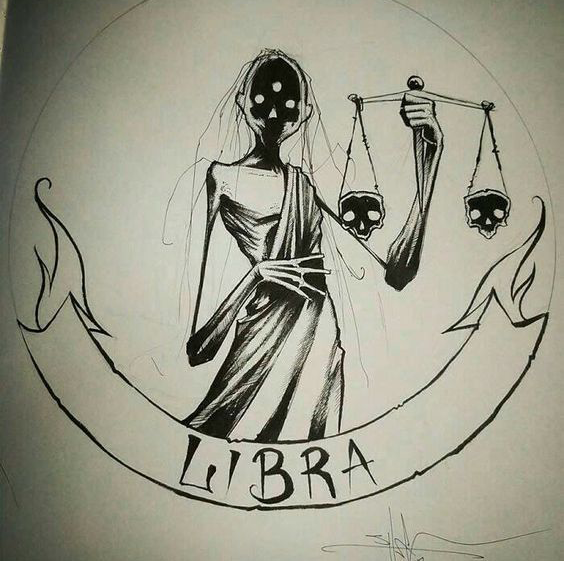

Libra rules the zodiac’s seventh house of relationships, and you’re at your best when you have a companion to share your life with. A romantic idealist, you’ll wander the Earth looking for the perfect match. In fact, you’ll wait years until the right person comes along, leaving friends and family wondering why someone with your charm and good looks is still single

Libra people tend to need balance in their lives like no other sign of the zodiac, which makes the symbol of the scales particularly appropriate for this sign. Libra people need to keep a balance between work lives and recreational lives and an equal balance in their emotional and spiritual/physical lives. Because of this need Libra signs can sometimes seem wishy-washy when they are asked to make a decision. This is because they must ‘weigh’ all of their options. However, rest assured, that when a Libra makes up their mind the decision is likely to be the best win/win for all involved; benefiting the most people. This sign does not like to see people unhappy.
Libra all have a sense of fair play about them and become completely upset if they perceive that something is unfair or unjust. They are prone to talking for long periods of time about their favorite subjects. Generally the decisions that a Libra makes are the ones that will benefit the most people. Libra are often self-sacrificing for the good of the team or the family.